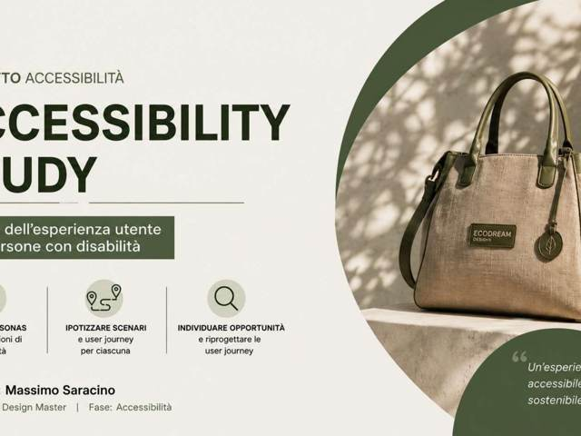
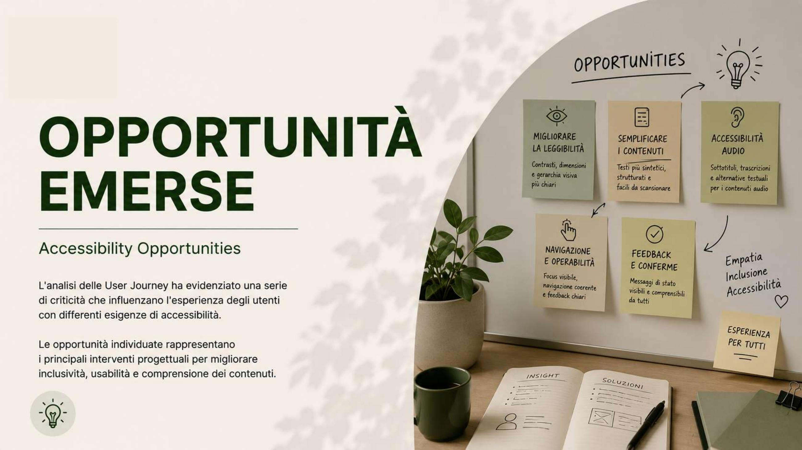

Il progetto
Questo esercizio approfondisce l'esperienza di Ecodream Design dal punto di vista dell'accessibilità: come cambia il percorso d'acquisto per persone con esigenze visive, motorie o cognitive diverse?
Ho costruito personas e scenari d'uso specifici, analizzando le user journey già mappate nella fase di Discovery alla luce delle criticità di accessibilità: leggibilità dei contenuti, navigazione da tastiera, chiarezza dei feedback di sistema.
Dall'analisi sono emerse cinque aree di opportunità concrete — leggibilità, semplificazione dei contenuti, accessibilità audio, navigazione e feedback — che ho poi tradotto in indicazioni operative per il redesign del sito.

Uno sguardo al dettaglio
Le opportunità emerse dall'analisi delle user journey: migliorare leggibilità, navigazione, feedback e accessibilità audio, per un'esperienza pensata per esigenze diverse.